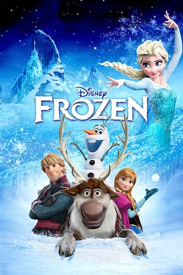
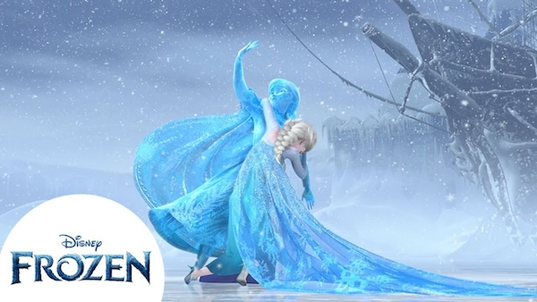

Summary
Disney's Frozen is a 2013 animated film inspired by Hans Christen Anderson's 1844 Fairytale, " The Snow Queen". The movie follows the lives of two princesses of the fictional country Arendelle, Elsa and Anna. Elsa was born with magical powers of ice, and after she accidentally injures her sister with her powers, their parents decide to isolate Elsa and the castle until she learns to control her powers. Unfortunately, their parents die at sea and Elsa is crowned Queen. During the coronation, Anna meets Hans and falls in love at first sight. She asks her sister for her blessing in their marriage but is met with Elsa lashing out and revealing her powers to the public. Accused of being a witch, she flees Arendelle and creates a castle made of ice in the mountains. However, the use of her powers has created an eternal winter in Arendelle. Desperate, Anna decides to go find Elsa to fix Arendelle, leaving Hans in charge. During her journey, she meets Kristoff, his reindeer Sven, and a magical snowman named Olaf. After finding Elsa, Anna was hit by Elsa's magic, which caused her heart to freeze. Kristoff brings Anna to the trolls who say that the only way to save Anna is with a true love's kiss. However, as soon as they find Hans, he reveals that his motive from the start was to become the ruler of Arendelle. He then proceeds to capture Elsa and tries to kill her but is stopped by Anna who turns into ice. Luckily, Anna soon thaws as this was an act of true love. Elsa then ends the eternal winter and the sisters live happily ever after.
Key Moments
Disney's Frozen was a pop cultural phenomenon of its time, becoming the highest grossing film of the year. The theme song of Elsa, "Let it Go" also reached virality and mainstream success, especially with children. The song also eventually won the Academy Award for Best Original Song. One of the Key Moments of the film was the ending scene, where it became apparent that the Act of True Love was sisterly love instead of a romantic kiss. This was a deviation from the traditional plot of Disney where the story is more romantic than platonic.